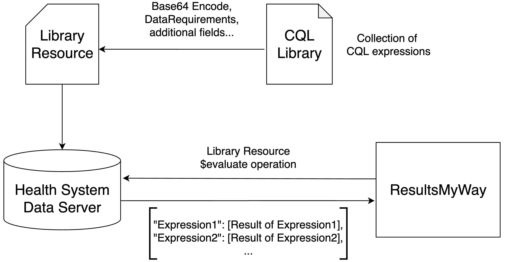

Clinical Quality Language (CQL) is an HL7 specification built for defining standardized and shareable logic. It has primarily been used for insurer/payer implementations such as documentation requirements and coverage requirements discovery. These implementations use CQL to determine if a certain patient has required Conditions, Encounters, Medications, or other clinical artifacts which qualify them for coverage of some type.
ResultsMyWay pioneers the use of CQL for retrieving clinical artifacts, using standardized logic operators, from a patient's medical record which may influence the interpretation of the results of a laboratory test ordered for that patient.
A collection of CQL expressions is called a Library. Expressions can query clinical artifacts as declared by the Library data model (FHIR in this case), and employ a wide variety of operator and filter logic before returning a result.
Example:
This expression retrieves all FHIR Encounter resources for the target patient. It also retrieves all FHIR Location resources in the health system whose "type" code is found in a valueset of codes compiled from here called "Special Care Locations Set". It then filters each Encounter to see if its "Location" field reference is equal to the ID of any of the special care Locations. The expression then returns a list of structured objects, each of which contain the type and ID of a qualifying Encounter resource.
Stored on the server, a FHIR Library resource contains a base-64 encoded string representing the CQL Library, references to terminology requirements, and various other fields. The CQL Library can then be executed within the server by sending a POST request including the $evaluate operation and several context parameters. The server then returns the results of the CQL Library evaluation.

The CQL results are then typically combined with a companion FHIR Questionnaire resource which displays criteria which have been fulfilled as well as those that may still require manual user input. These FHIR Questionnaire resources are constrained by profiles have been created by the HL7 Structured Data Capture (SDC) workgroup to facilitate their use alongside CQL Libraries.
In ResultsMyWay, it is anticipated that the FHIR QuestionnaireResponse, which is generated when the user completes the form and clicks "Submit", would be sent to the appropriate result-interpreting clinician or lab technician to assist them in the interpretation of the infant's NBS results.
This demo mocks the CQL results for the following use case:
An expecting 37-year-old mother at 33 weeks gestation with known hypothyroidism is being observed in the hospital with sudden onset nausea, vomiting, and severe headache. She is shortly diagnosed with HELLP syndrome and started on fluid resuscitation, 1 unit of packed red blood cell transfusion, and intravenous steroids. She is stabilized and prepared for immediate delivery. She gives birth to a male infant. He is found to have low birth weight, in significant hypoxia, and lethargic at delivery. He responded to supplemental oxygen and is transferred to the NICU where a blood test is collected. Lab results showed low thyroxine in the newborn as well as anemia. The newborn is blood typed and started on a blood transfusion while in the NICU. While there, a sample is collected for NBS.